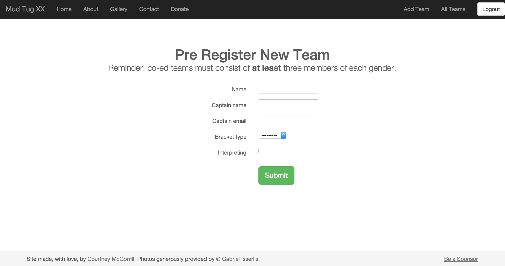

Courtney McG orrill
Mud Tug
mudtug.rit.eduThe Context
Every fall, my sorority co-hosts Mud Tug, a 10 v. 10 tug-of-war tournament in the mud. The event is in its 21st year, and within the last 4 years averaged about 1600 participants.
The Problem
Tracking teams by hand and haphazardly throwing teams together on a whiteboard doesn't scale for an event that has nearly 2000 participants and grows each year. There needed to be a more streamlined system for checking in, registering, and utilizing that information for matching up teams to tug.
The Project
The first release of the website supported the registation of teams by an admin. Teams could then skip the registration line the day of the event and quickly be checked in by a quick search of team names already registered. Only teams who have checked in or regsitered that day were added to the preliminary rounds, this prevented no shows and reduced the number of forfeits throughout the day.
What's Next?
The first release of the website had several bugs that caused problems when matching teams through the web app, so we ended up using our manual back up plan that involved tracking teams through a Google Spreadsheet. The main goal of the second release is to identify and resolve those problems, in addition to streamlining the process of pushing code to production. We also were unable to move forward with online registration for all particpants due to administrative issues; this is also a high priority for the next release. After bug fixes and exhaustive testing of the core functionality, I would like to explore what options exist for real time viewing of how teams are being matched and how long participants will have to wait until they get to tug.